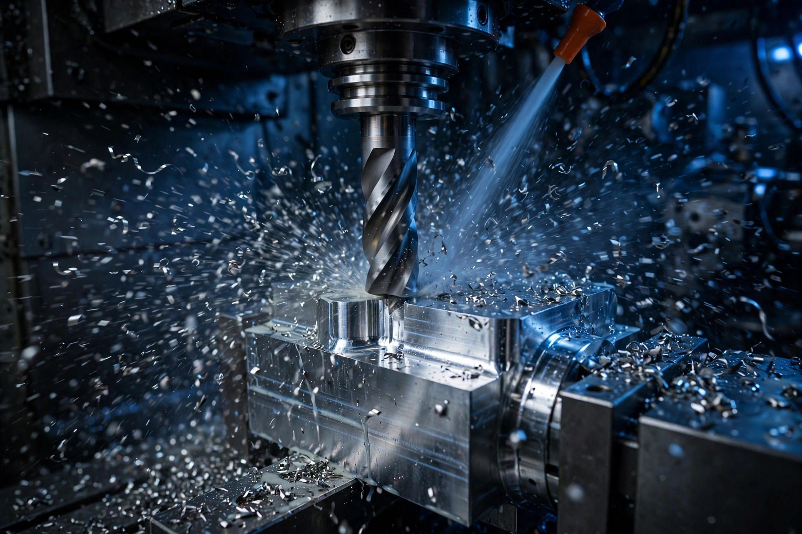
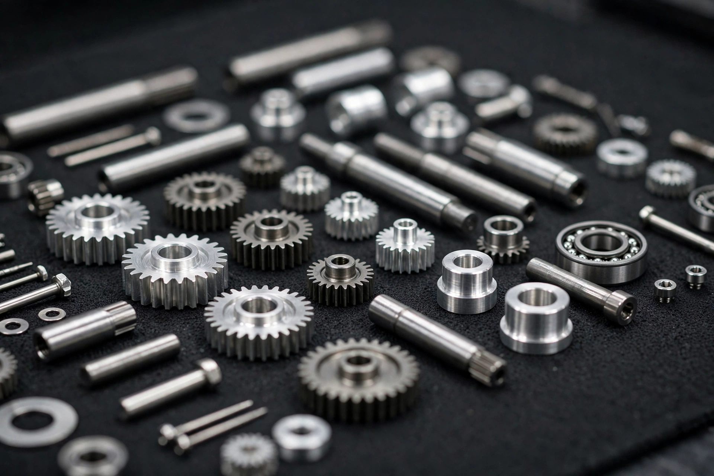

BUSINESS
事業内容

MACHINING
精密加工
5軸マシニングセンタと複合旋盤を中心に、アルミ・ステンレス・チタン・インコネルなど幅広い材質の切削加工に対応しています。公差±0.005mmが求められる精密部品から、複雑な3次元形状まで、自社一貫で加工します。
- 対応材質：アルミ合金、SUS304／316、チタン合金、インコネル718 ほか
- 最大加工サイズ：650 × 400 × 350mm（5軸加工機）
- ロット対応：試作1個〜月産10,000個まで

PROTOTYPE
試作開発
製品開発の初期段階から伴走し、量産を見据えた試作づくりを支援します。加工可否の検討、材質選定、コストダウンにつながる形状提案など、図面が固まる前の段階からご相談いただけます。
- 試作リードタイム：最短3営業日（形状・材質による）
- 3Dデータ（STEP／IGES／Parasolid）からの加工に対応
- 設計者とのオンライン打ち合わせ・工場見学も可能

QUALITY
品質管理
三次元測定機、画像測定機、真円度測定機を備えた恒温検査室で、ミクロン単位の測定を行います。ISO 9001に準拠した品質マネジメントシステムのもと、検査成績書の発行にも対応しています。
- 全ロットに工程内検査＋出荷前検査を実施
- ミルシート・検査成績書の添付に対応
- トレーサビリティ：材料証明から加工履歴まで一元管理
EQUIPMENT
主要設備
加工機・測定機あわせて40台以上の設備を保有しています（抜粋）。
| 設備名 | メーカー／型式 | 台数 | 備考 |
|---|---|---|---|
| 5軸マシニングセンタ | DMG森精機 MU-500V | 3台 | 最大加工径 φ500mm |
| 立形マシニングセンタ | オークマ MB-56V | 8台 | 高速・高剛性仕様 |
| CNC複合旋盤 | ヤマザキマザック INTEGREX i-200 | 4台 | ワンチャック完結加工 |
| CNC旋盤 | DMG森精機 NLX2500 | 9台 | バーフィーダ付 2台 |
| ワイヤ放電加工機 | ソディック AG400L | 2台 | 高精度金型部品向け |
| 平面研削盤 | 岡本工作機械 PSG-63DX | 3台 | 平面度 0.002mm対応 |
| 三次元測定機 | ミツトヨ CRYSTA-Apex S | 2台 | 恒温検査室に設置 |
| 画像測定機 | キーエンス IM-8000 | 1台 | 小物部品の高速測定 |